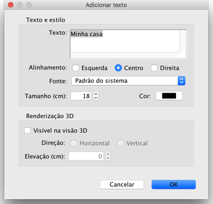

|
|
Adicionando textos | ||
|
Para adicionar textos no plano da casa, voc� deve primeiro escolher Plano > Adicionar textos ou selecione a ferramenta Adicionar textos.
Para adicionar um novo texto, clique na sua localiza��o no plano de origem, em seguida, digite o texto no painel que aparecer� como mostrado abaixo.  Uma vez que um texto � criado, voc� pode mudar seu tamanho e estilo atrav�s dos itens dispon�veis em no submenu Planos > Modificar estilo de texto. Voc� pode mudar tamb�m seu texto, fonte, cor e renderiza��o 3D selecionando o menu Plano > Modificar texto. Selecionando o check box Vis�vel na vis�o 3D na janela de modifica��es permitir� o texto aparecer na Vis�o 3D tamb�m, na orienta��o vertical ou na horizontal.
Para terminar de adicionar textos, escolher Plano > ou selecione a ferramenta Selecionar (ou uma outra ferramenta).
No modo Sele��o, voc� pode rotacionar um texto selecionado com seu indicador ou dar um duplo clique nele para mostrar a janela de modifica��o. |


|